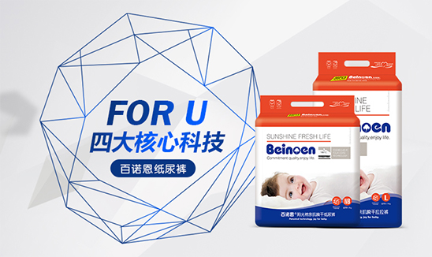
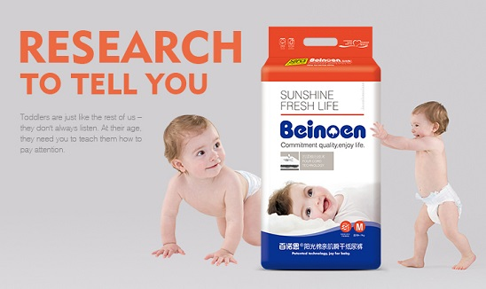
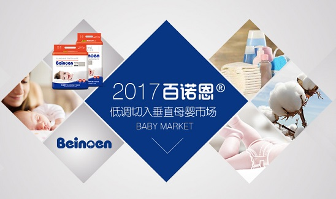

官方动态
OFFICIAL DYNAMICS
Commitment to growth up healthy
-
- 
- 2017-03-04
-
- 
- 2017-03-04
-
- 
- 2017-03-04
宝妈好评—纸尿裤
MOTHER PRAISE
Commitment to growth up healthy
- @徐梓悦 第二胎了，百诺恩的纸尿裤真的非常好用，透气柔软，腰部设计特别好，一点都没有侧漏，最关键的是真的干爽，宝宝天亮换尿布，满满的尿，可尿裤表面还是很干爽，大爱，超越我之前用的太多大牌了。宝宝月子里用的是这款，小屁屁一直很好，从来没有红屁屁，一如既往的支持。
- @王雨姗 我家宝宝肌肤比较脆弱，老是因为纸尿裤潮湿红屁屁，为了选到真正干爽的纸尿裤让宝宝睡个好觉，国内的进口的品牌几乎试个遍，直到闺蜜向我推荐了百诺恩，宝宝尿后纸尿裤表面几乎一点都不湿，而且非常的柔软，必须给百诺恩点赞！
- @陈 燕 我家宝宝9个半月，晚上通常一宿睡12+小时，一片尿不湿就ok，几乎没有侧漏。孩子睡觉非常爱动，但是百诺恩的裁剪很服帖，因此也不必担心会漏屎漏尿，我们也省去了很多麻烦。
- @Emily This paper diaper is very good，my baby has been used it since she was born.Buttocks are dry and loose,baby has a comfortable feel,and we are so trust in BEINOEN.
- @王婷婷 之前很多人推日本某品牌的纸尿裤，我买来就觉得日货不过如此，尿多了就有断层，用手摸里面起坨，有点小失望。相对于日货，我更信赖英国百诺恩，包装大品牌，做工也很精细，用料都是上等，柔软，细腻，宝宝用着舒服，当父母的也放心。
- @李欣怡 婴儿肌肤的触觉非常敏锐，对不良刺激更加敏感，只要有一点点的不适，婴儿就会感到非常不舒服。所以我只信赖百诺恩，透气好，吸水性好，不返渗，不侧漏，带给宝宝长达12小时的干爽体验！
- @Jenny Since my baby was born,we always choose BEINOEN Because the BEINOEN ,My baby never has rashes even the weather is so wet.BEINOEN protect baby’s fragile skin!
宝妈好评—妈妈护肤
MOTHER PRAISE
Commitment to growth up healthy
- @丁媛媛 为了宝宝健康，相信英国专业母婴产品百诺恩，试用之后必须点赞，水水的，基本没有什么味道。非常温和，泡泡很多，不刺激皮肤，纯植物萃取而成，很健康！
- @潘小玉 怀孕不知道用什么，闺蜜推荐我买百诺恩，说很好用。为了宝宝现在根本不敢乱用护肤品，但是百诺恩的大品牌和纯植物配方让人很信服，护肤品补水滋润，健康美丽两不误，很满意！
- @Ava Pure plant formula can provide nutrition for the skin, while healthy formula is good for baby's health,I will stick to it.
宝妈好评—宝宝洗护礼盒
MOTHER PRAISE
Commitment to growth up healthy
- @张 晓 宝宝洗了还不错！淡淡的香味，不刺激！泡沫细腻，容易冲洗！不像我买的其他的，泡沫好多，很反感！清洁力也还可以，以后还会一直用这个！
- @郑雯雯 宝贝很好用！已经是第二次购买了，味道香味很淡，很适合宝宝，而且用着对皮肤很温和，宝宝用着也不过敏，绝对好评。
- @Sarah BEINOEN’s Care package is warm and no stimulation,the foam is easy to clean,baby feel very comfortable and moisturizing after washing , it’s so fit for your baby.